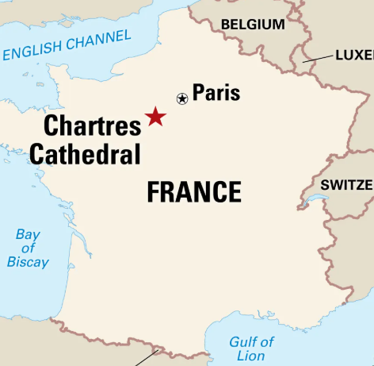
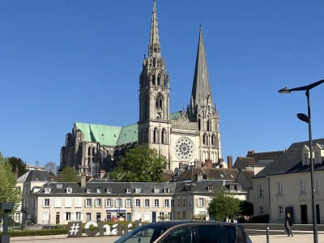 After Paris, I took a short train ride to the city of Chartres, home of the famous 13th-century Notre Dame de Chartres Cathedral. |
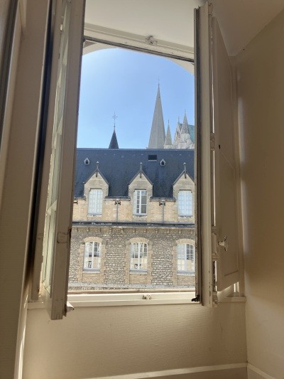 The view from my little hotel room with the spires in the background |
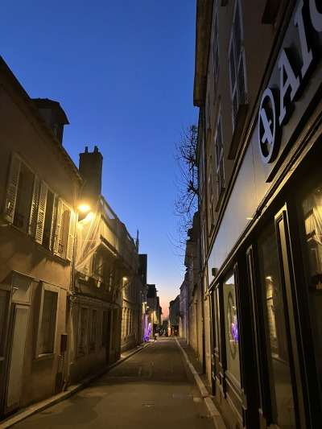
Chartres at night - it's a small city with a medieval core of crisscrossing streets |
|---|---|---|
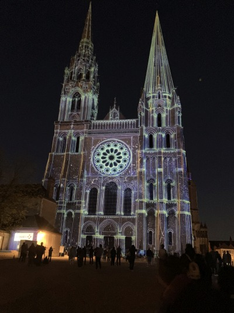
The town of Chartres puts on an animated light and music show that illuminates many of the famous landmarks of the city. I highly recommend looking up a video or two of the program, such as this one. |
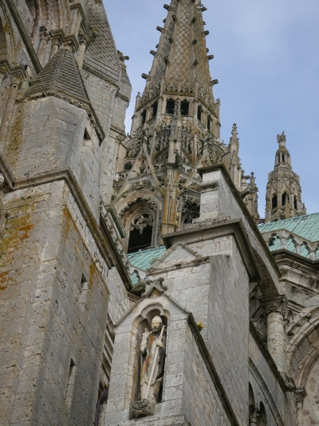
The many architectural layers of Chartres Cathedral |
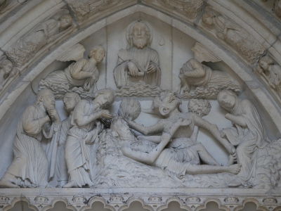
The outside of the cathedral is covered with statues that illustrate stories of the Faith. This one is of the suffering of Job. Job lies covered in sores (with what appears to be a bird's nest behind his head), tormented by Satan. His three friends who hang around and give him advice are to the left, and his wife is on the right, perhaps advising him to "curse God and die" (Job 2:9). Christ and his angels are above, both encouraging Job in his struggles and reminding the viewer that Job prefigures the suffering Christ who calls all to embrace their crosses with patience and trust in God. |
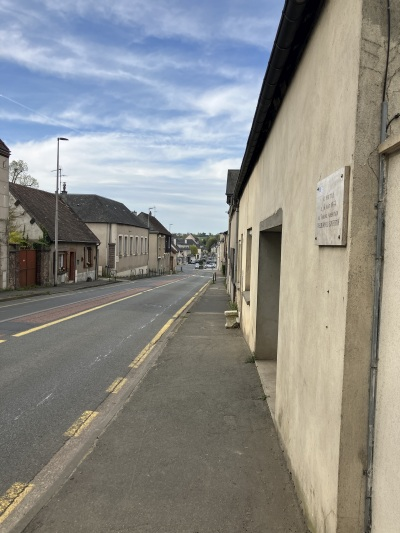
The location just north of Chartres where Colonel Welborn Griffith was killed. As the allies approached Chartres in WW2, they feared that Germans had an observation post in the spire. The decision was made to level the Cathedral, but Colonel Griffith volunteered to commandeer a jeep and inspect the situation in person. Finding no Germans, he thus saved the Cathedral from destruction. He was killed the next day. The French and all who are friends of Chartres love him dearly. You can read more about him at this link. |
|
He was killed in the town of Leves, so I found a beautiful path that is part of the Camino of Saint James back to Chartres. The path follows the the River Eure. |
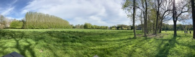
Panorama near the path in Leves |
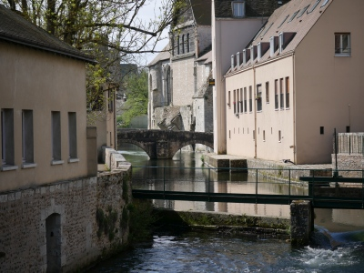 The River Eure which flows through Chartres |
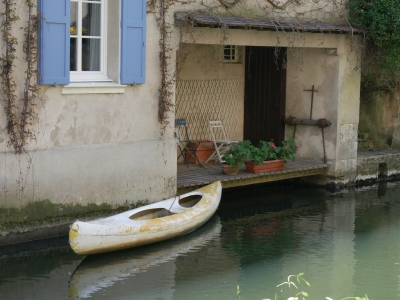 An atmospheric little home right on the river |
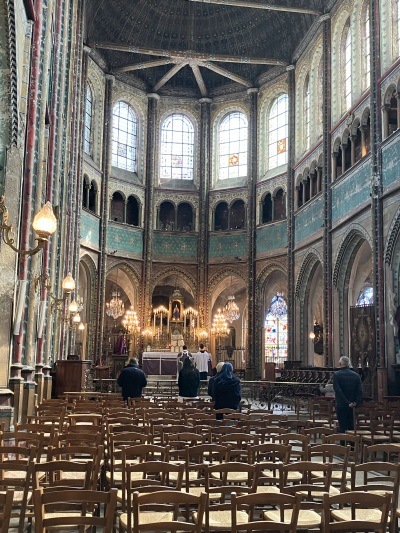
I chanced upon an Extraordinary Form (Latin) Mass in the wonderful 16th-century church of Saint-Aignan. It is loaded with stylistic details and has just the right amount of unrestored grit and atmosphere. |
Saint-Aignan |
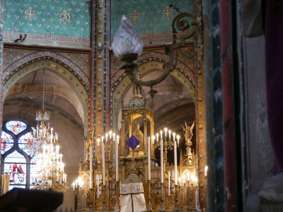 Saint-Aignan |
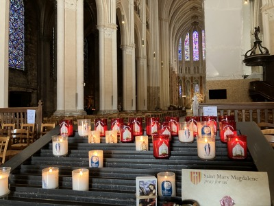
Chartres Cathedral interior. The renovation inside is, in my opinion, a failure - it tries to have different sections of the building restored to different time periods of its existence, but ends up jumbled and lacking in unity (especially for an active church). |
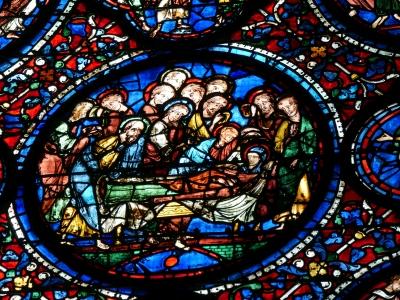
Chartres is famous for its stained glass, especially its blue hues. Here we see the Dormition (death/falling asleep) of Mary (aka "Notre Dame" - "Our Lady"). |
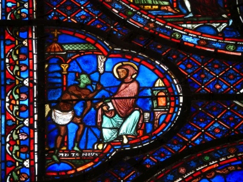
The temptation of Saint Antony by the devil |
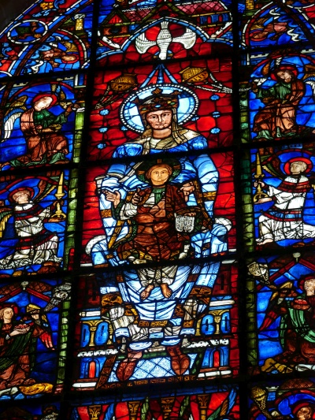
From the wikipedia article: "'Notre-Dame de la Belle-Verriere', one of 75 representations of the Virgin Mary in Chartres Cathedral, owes its fame to this exceptional cobalt blue. It was almost lost in the 1194 fire, with only its central panel of the Madonna and Child and the three windows over the main door surviving." |
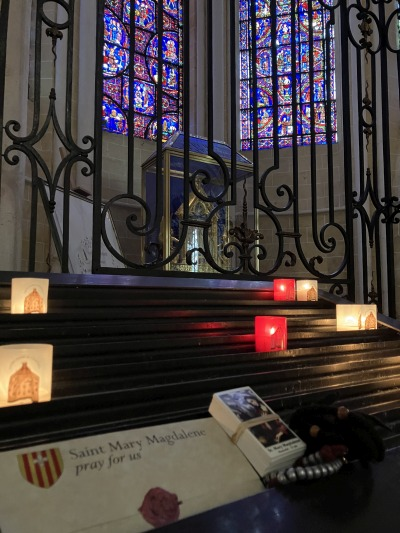
The central gem of Chartres is the Veil of Our Lady. From this article: "The Veil of Mary (Sancta Camisa) is an oblong piece of silk that Mary is reported to have worn during the Annunciation of Jesus's birth by the angel Gabriel, and/or during her labor and delivery of Jesus. King Charles the Bald gave the veil to Chartres Cathedral in 876. His grandfather, Charlemagne, had received it as a gift from the Byzantine Empress Irene. When tested in the twentieth century, the cloth contained pollen from first-century Palestine." |
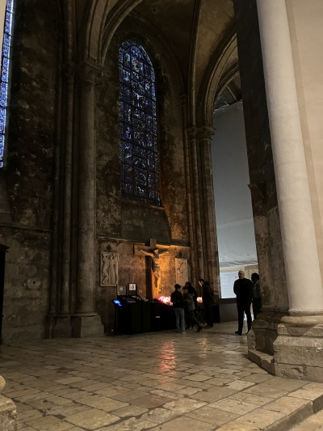 Chartres Cathedral
|